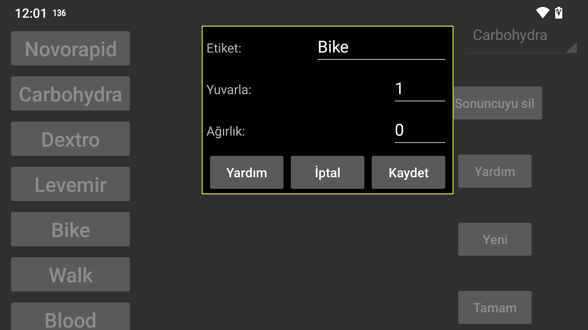

Sayıları girmek için kullanılacak etikettir. Orta Sol Menüdeki "Yeni Miktar"ı kullanarak belirli bir tarih ve saate bağlı bir sayı ekleyebilirsiniz. Bu sayılar glikoz grafiğinde veya bir listede görüntülenebilir.
Kerfstok saat uygulamasında kullanılır. Bu etiket altında girilen sayılar bu sayıya yuvarlanır.
0= tam hassasiyet, 0.5 = 0,5'in katlarına yuvar vb.
0 olarak ayarlandığında, sayılar değerlerinden bağımsız olarak grafikte belirli bir yükseklikte görüntülenir. Ağırlık 0'dan yüksekse, bu etiket altında girilen her miktar bu ağırlıkla çarpılır ve glikoz grafiğiyle aynı koordinatlarda bir kare olarak görüntülenir. Örneğin, parmak ucu glikoz ölçümlerini glikoz sensörü ölçümleriyle aynı şekilde görüntülemek için ağırlığı 1 olarak ayarlayabilirsiniz.